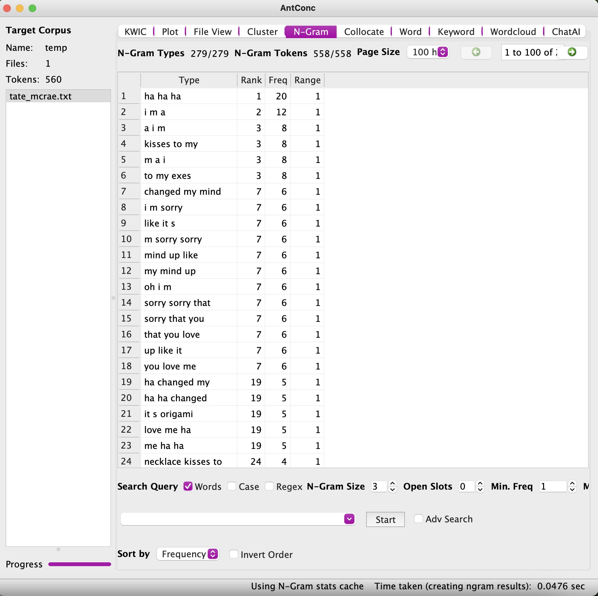

I choose to to do song lyrics from Pop artists from 2000s to now.
Voyant Tools
This song is called "Poker Face" from Lady Gaga. This song is called "Exes" from Tate McRae. This song is called "No" from Meghan Trainor. This song is called "Sucker" from the Jonas Brothers. This song is called "Something Different" from Why Don't We. This song is called "Talk" from Why Don't We.
AntConc Tools

Three-grams showing "ha ha ha" as the most popular cluster
in this Tate McRae song. Three-grams showing "don t listen" as the most popular cluster
in this Why Don't We song.
With comparing the two song there is not a line that matches on 3 n-grams